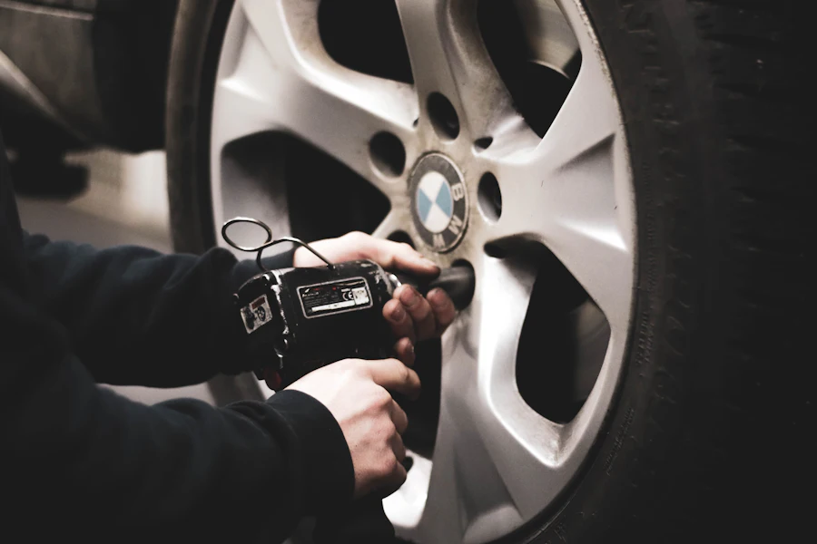

Le neuf quand il le faut, au tarif comptoir
Certaines pièces se remplacent toujours par du neuf : plaquettes et disques de frein, filtres, courroies de distribution, amortisseurs. P.A.C. les commande pour votre véhicule et vous les remet au comptoir, sans la marge d'un réseau constructeur.

Ce qui se commande en neuf
- Freinage : plaquettes, disques, étriers, flexibles.
- Filtration : filtres à huile, à air, à carburant, d'habitacle.
- Distribution : kits courroie, galets, pompes à eau.
- Suspension : amortisseurs, silentblocs, rotules.
- Électricité : batteries, bougies, capteurs.
- Consommables : huiles, liquides, balais d'essuie-glace.
Neuf ou occasion : le bon choix pièce par pièce
La règle du métier est simple. Les pièces de sécurité et d'usure (freinage, distribution, filtres) se posent neuves. Les pièces de structure et d'équipement (moteur, boîte, carrosserie, optiques, sellerie) se trouvent en occasion vérifiée pour une fraction du prix. Au téléphone, P.A.C. vous oriente franchement vers l'option la plus sensée pour votre véhicule et votre budget : c'est l'avantage d'un comptoir qui vend les deux gammes depuis 1992.
Commande et retrait
Appelez le 04 94 08 15 33 avec votre carte grise ou la référence constructeur. Le prix et le délai sont annoncés immédiatement; la plupart des références arrivent sous 24 à 48 h ouvrées au comptoir de la ZI Toulon Est.
Comparez avant d'acheter :
le devis est gratuit et immédiat.
Un appel, deux prix (neuf et occasion quand elle existe), et vous décidez.
☎ 04 94 08 15 33